Tambasasayama, Hyogo: things to do, food and stays
Tambasasayama · Hyogo
Tambasasayama
Highlighted on the Hyogo map.

Stay
グランヴィリオホテル丹波篠山 和蔵
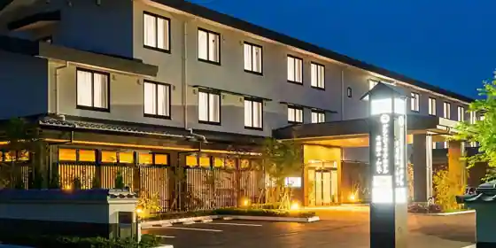
Guranvirio Hotel Tanba Shinoyama Wazo
豆家
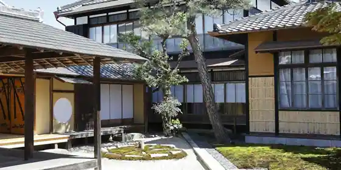
Mame Ie
丹波篠山近又
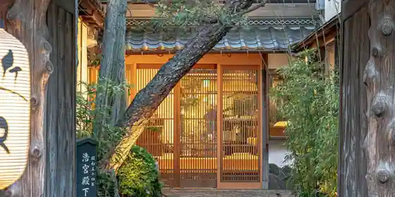
Tanba Shinoyama Kin Mata
篠山城下町ホテル NIPPONIA
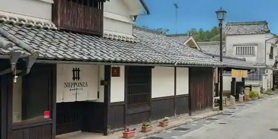
Shinoyama Jokamachi Hotel NIPPONIA
oito
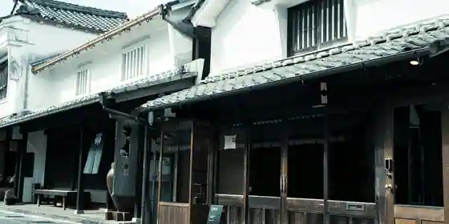
oito
潯陽楼
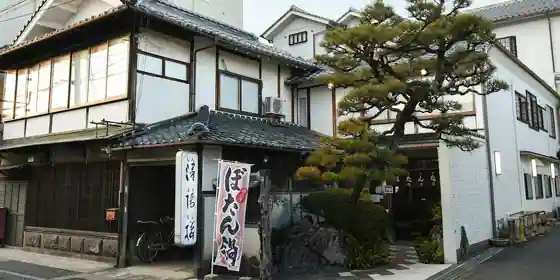
Jinyo Ro
NIPPONIA 後川 天空農園
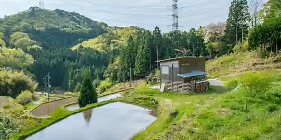
NIPPONIA Ushirokawa Tenku Noen
Inn in Ushirokawanitta, Tambasasayama with a quiet countryside setting.
丹波篠山 古民家の宿 集落丸山
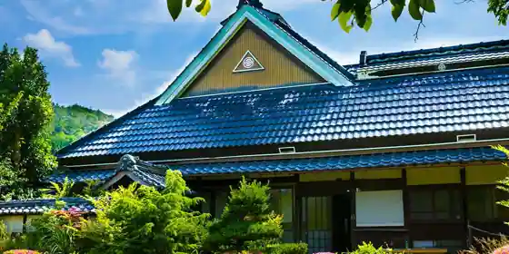
Tanba Shinoyama Ko Minka No Yado Shuraku Maruyama
Inn in Maruyama, Tambasasayama with a renovated traditional house.
丹波篠山 料理旅館 高砂
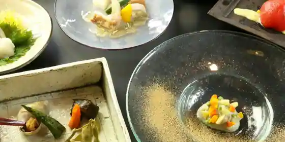
Tanba Shinoyama Ryori Ryokan Takasago
mai
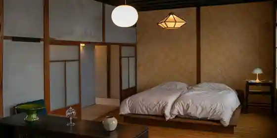
mai
八十一
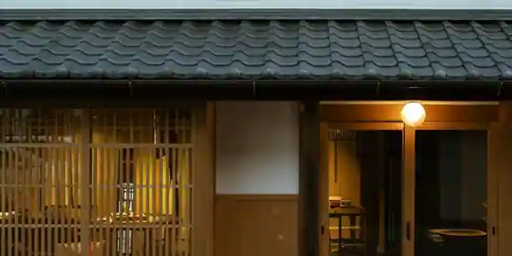
Yasoichi
Inn in Sakanaya, Tambasasayama with a renovated traditional house.
篠山観光ホテル
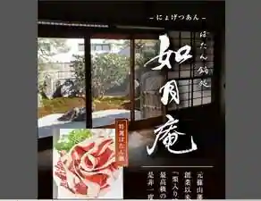
Shinoyama Kanko Hotel
Dining
ろあん松田 篠山店
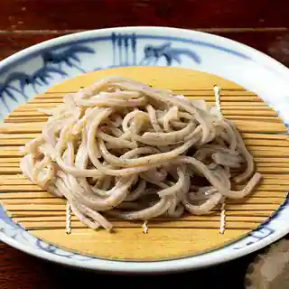
Roan Matsuda Shinoyama
Kuwa Monpe
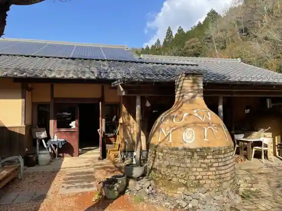
Kuwa Monpe
一会庵
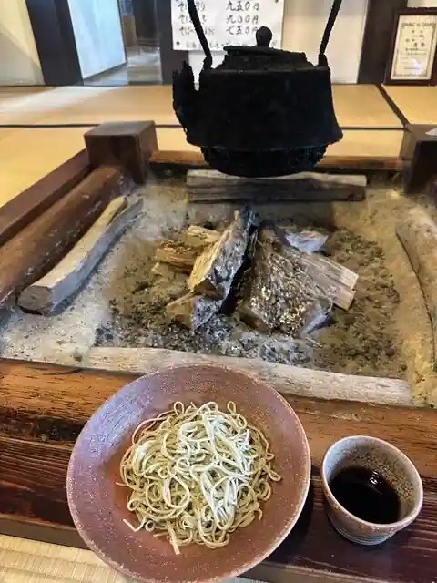
Ichie Iori
いわや
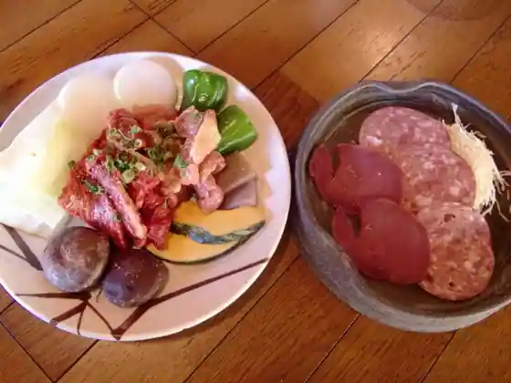
Iwaya
ぼたん鍋処 如月庵
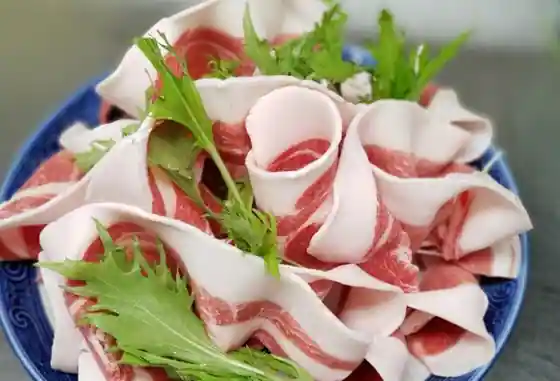
Botan Nabe Tokoro Kisaragi Iori
ぼたん鍋専門店 ぼたん亭
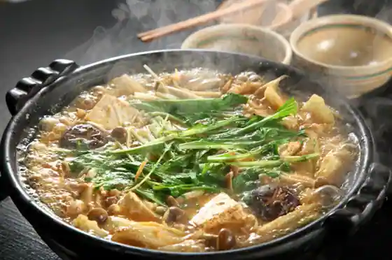
Botan Nabe Senmon Botan Tei
ルナパルパドス 今田
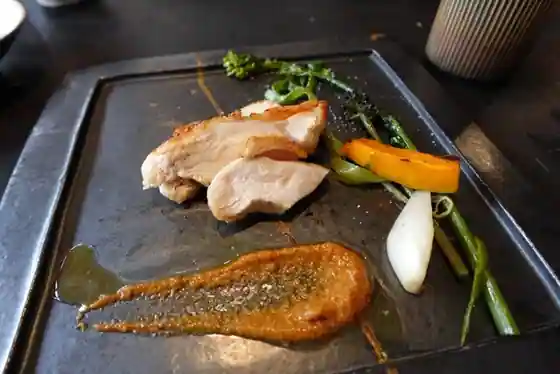
Runaparupadosu Imada
小西のパン
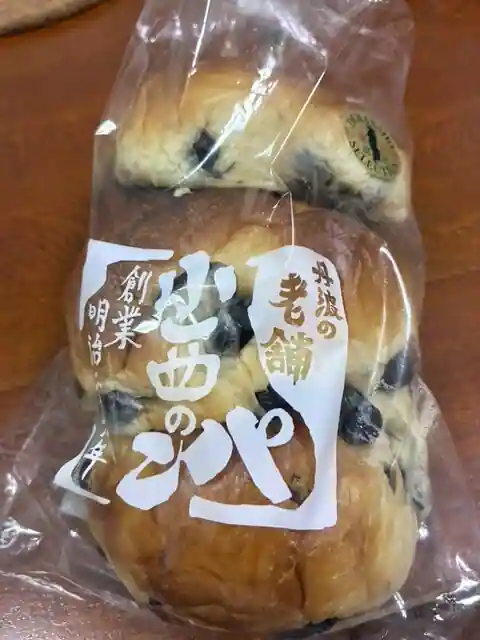
Konishi No Bakery
手打ち蕎麦 くげ
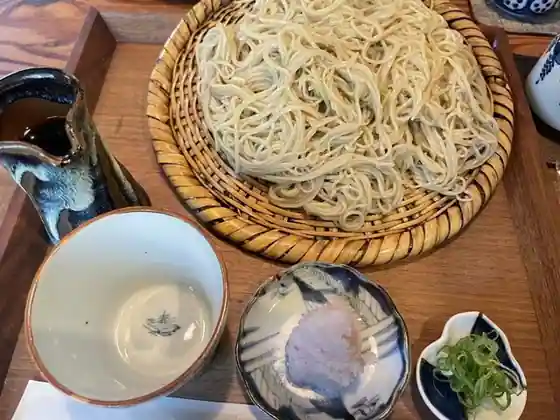
Teuchi Chi Soba Kuge
小田垣豆堂
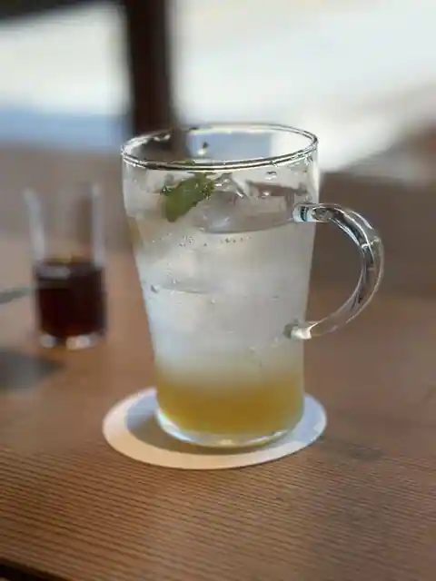
Oda Kaki Mame Do
SAKURAI
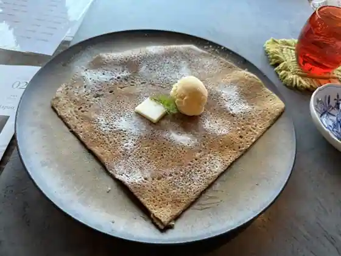
SAKURAI
Sらーめん 丹波篠山本店
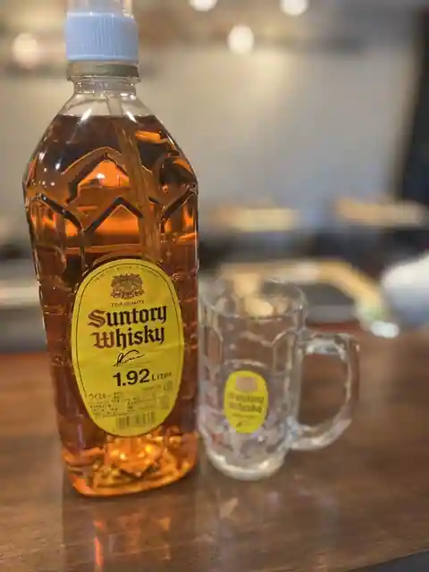
S Ramen Tanba Shinoyama Hon
まえ川
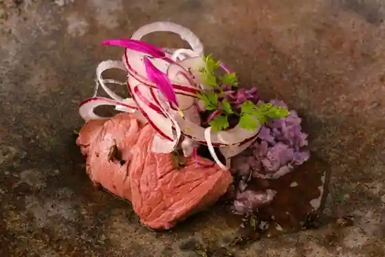
Mae Kawa
ルアン 篠山城下町ホテル NIPPONIA
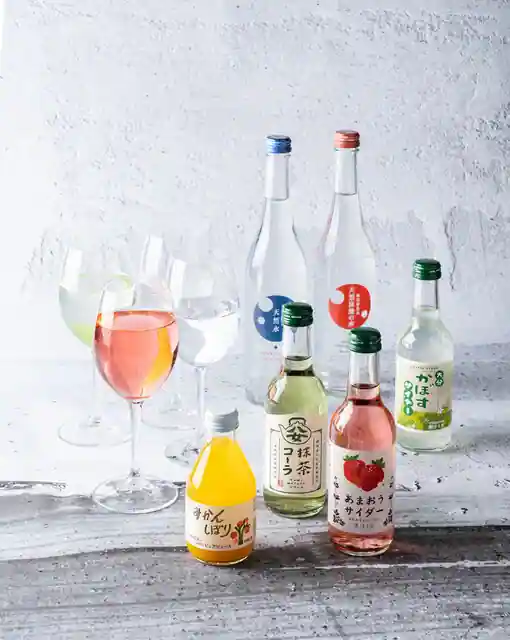
Ruan Shinoyama Jokamachi Hotel NIPPONIA
小田垣商店
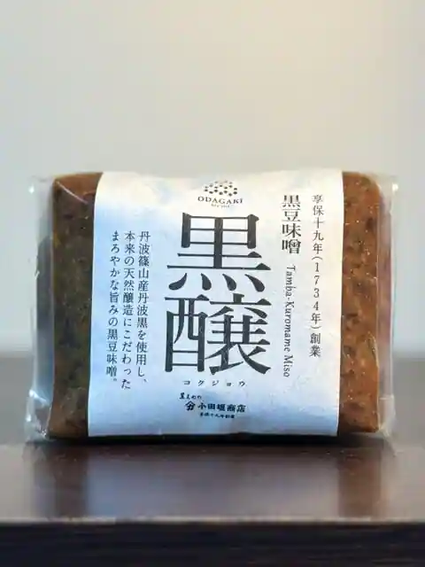
Oda Kaki Sho
雪岡市郎兵衛 洋菓子舗
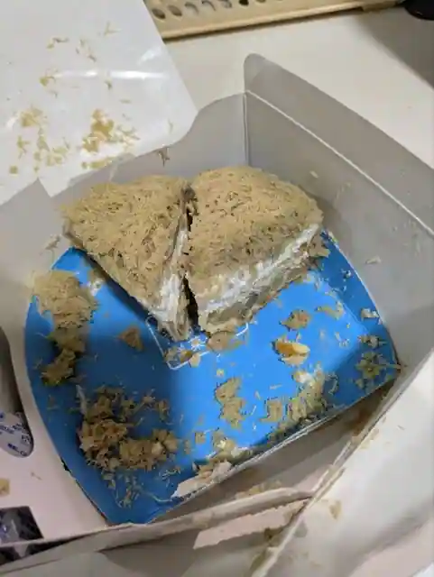
Yukioka Ichiro Be Yogashi Ho
一眞坊
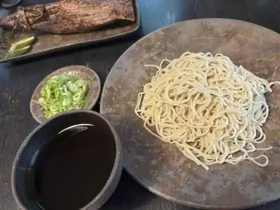
Isshin Bo
牛屋たなか
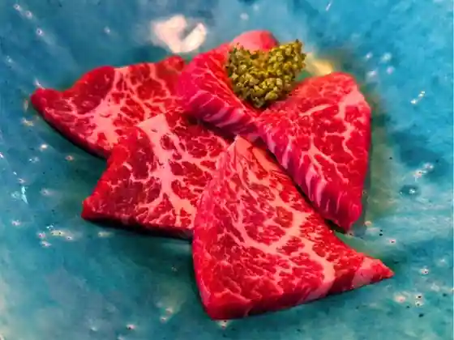
Ushiya Tanaka
大福堂 本店
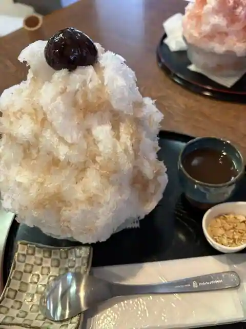
Daifuku Do Hon
玉の助
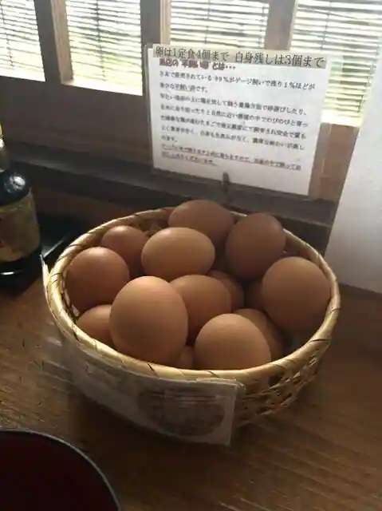
Tama No Jo
一休庵
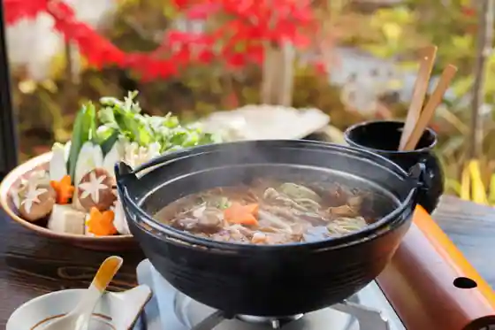
Ikkyu Iori
つけめん ひとはな亭
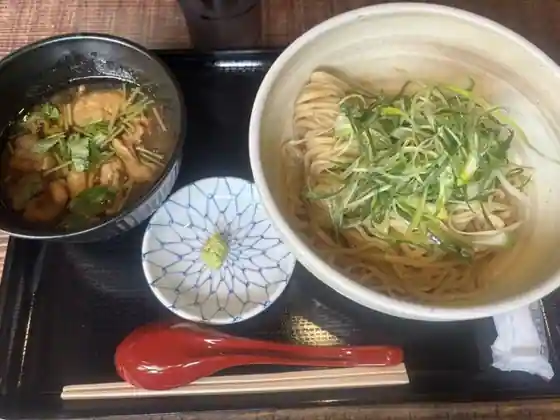
Tsukemen Hitohana Tei
清明堂
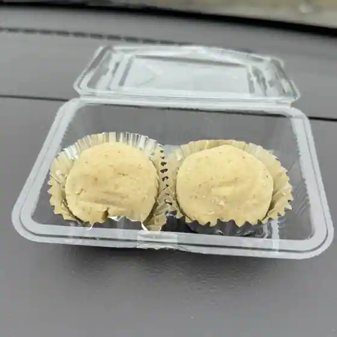
Seimei Do
Sights
Sasayama Castle Oshoin
Reconstructed grand study hall of Sasayama Castle in the historic castle town
Kawaramachi Merchant Houses
Preserved tsumairi merchant-house street in the Important Preservation District

Sasayama Castle Town District
Walkable castle-town core of samurai and merchant quarters

Tamba Traditional Craft Park Sue no Sato
Craft park introducing Tamba pottery traditions

Anma Samurai House Museum
Preserved samurai residence museum in the castle town